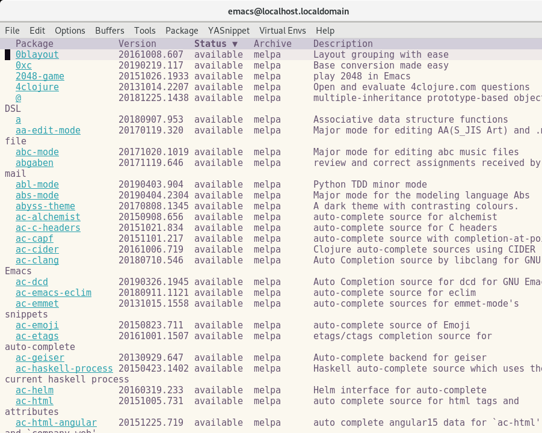
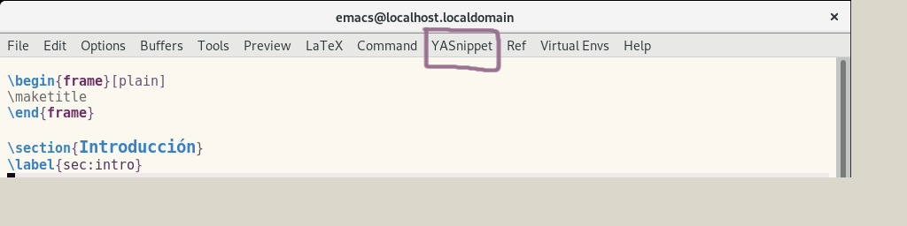
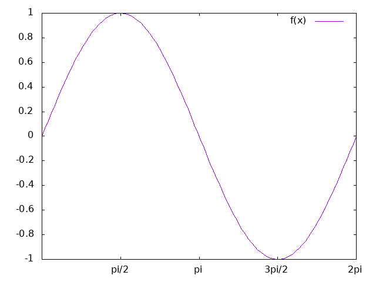
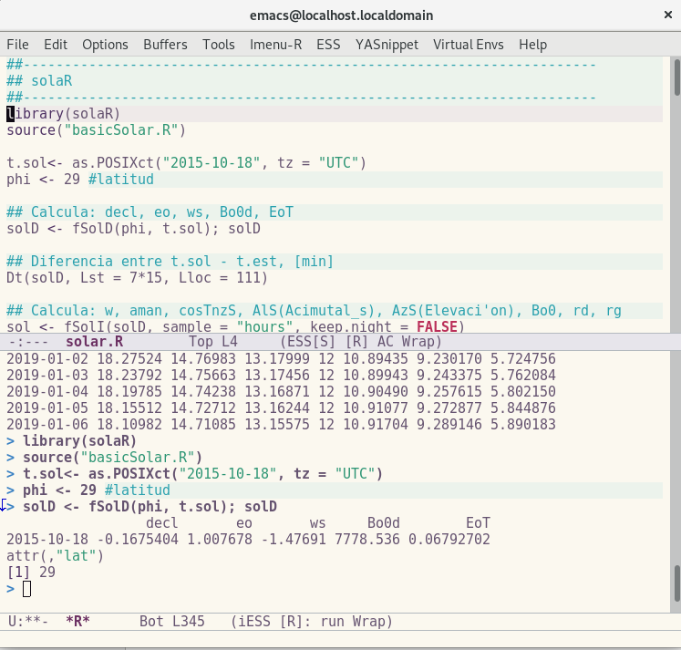

EMACS
Table of Contents
1 Básicos de Emacs
Conocer las teclas <Ctrl> y <Meta> es lo más básico en emacs, y es que son las teclas esenciales para cualquier comando.
- C : Ctrl
- M : Alt (Meta)
Para abrir un archivo desde la terminal utilizamos el comando:
- $ emacs filename
1.1 Comandos básicos
1.1.1 Los comandos básicos son:
- C-x C-s : guardar un archivo
- C-x C-c : cerrar archico
- C-x C-f : abrir archivo
- C-_, C-/ : Deshacer
- C-g : Abortar comando
1.1.2 Copiar y pegar
- C-Space : seleccionar
- C-x h : seleccionar todo
- M-w : copixar
- C-y : pegar
1.1.3 Teclas para desplazarse:
- C-v / M-v : Vover la pantalla hacia delante / atrás
- C-l: Mueve el cursor al centro de la pantalla
- M-<: Mover al final del archivo
- M->: Mover al inicio del archivo
2 Configuración básica
Para configurar emacs es necesario modificar o crear el archivo .emacs en la dirección ~/.emacs. Cada vez que emacs se inicialice leerá el archivo .emacs para configurar a nuestro editor.
Algunas configuraciones sencillas se muestran a continuación, sencillas que facilitan el uso de emacs. Cada vez que agregemos algo a nuestro archivo .emacs tenemos que actualizarlo, lo podemos reiniciar o ejecutar unel comando M-x load-file [RET] e indicar que deseamos leer ~/.emacs.
(show-paren-mode t) ;; Resaltar donde abre y cierra el paréntesis (global-hl-line-mode 1) ;; Resalta la line actual (tool-bar-mode -1) ;; Ocultar la barra herramientas (logos) (menu-bar-mode 1) ;; Oculta la barra de menu (global-visual-line-mode 1) ;; Corta las lineas por palabras (setq inhibit-startup-screen t) ;; Evita la pantalla de inicio (global-set-key (kbd "C-c j") 'just-one-space) ;; M-SPC, elimina los espacios entre lineas ;; Guarda los archivos de respaldo de emacs en la carpeta .saves (setq backup-directory-alist `(("." . "~/.saves")))
3 Melpa
La gran ventaja de emacs es que puedes tener acceso a una gran cantidad de paquetes, Melpa es un repositorio de paquetes a través del cual puedes instalarlos. Es necesario agregar los siguientes comandos en el archivo .emacs.
;; Melpa (require 'package) (let* ((no-ssl (and (memq system-type '(windows-nt ms-dos)) (not (gnutls-available-p)))) (proto (if no-ssl "http" "https"))) ;; Comment/uncomment these two lines to enable/disable MELPA and MELPA Stable as desired (add-to-list 'package-archives (cons "melpa" (concat proto "://melpa.org/packages/")) t) ;;(add-to-list 'package-archives (cons "melpa-stable" (concat proto "://stable.melpa.org/packages/")) t) (when (< emacs-major-version 24) ;; For important compatibility libraries like cl-lib (add-to-list 'package-archives '("gnu" . (concat proto "://elpa.gnu.org/packages/"))))) (package-initialize)
Ahora ejecutamos el comando M-x package-list-packages [RET] para visualizar e instalar los paquetes desde MELPA. Para Instalar paquetes en MELPA:
- i : marcar para instalar
- d : marcar para borrar
- x : instalar
- u : desmarcar
Primero marcamos los paquetes que se desean instalar i, y posteriormente x los instalamos los paquetes seleccionados. También podemos instalar paquetes al ejecutar el comando M-x package-install [RET] y el nombre del paquete.

Figure 1: MELPA
Hay muchos paquetes de interesantes, pero lo mejor es los iremos tratando uno por uno.
4 Paquetes esenciales
4.1 Auto-Complete
El paquete Auto-Complete es una extensión que permite autocompletar el texto. Para instlarlo
M-x package-install [RET] auto-complete [RET]
Agregamos las siguiente orden en el archivo .emacs
(ac-config-default)
4.2 Aspell
La ortografía es algo importante. Para poder utilizar un diccionario en emacs primero es necesario tenerlo instalado en el sistema. Por ejemplo, para instalar el diccionario de español en fedora utilizamos el comando
sudo dnf install aspell-es
Ahora es necesario indicarle a emacs que utilizaremos el diccionario de aspell, y en nuestro caso utilizamos el diccionario en español por default.
(setq-default ispell-program-name "aspell") (setq ispell-dictionary "castellano")
4.2.1 Algunos comandos para la corrección de ortografía
- M-$ : Revisar una palabra
- M-x ispell : Revisa todas las palabras en el buffer
- M-x flyspell-mode : Habilita el modo flyspell, marca todas las palabras mal escritas
- M-x flyspell-prog-mode : Habilita el Flyspell para comentarios y cadenas de caracteres.
Para ver todos los comandos visita Checking and Correcting Spelling
4.3 Yasnippet
YASnippet es un sistema de template para emacs. Permite utilizar abreviaciones y automaticamente expandir a una función del template. Incluye templates de: C, Python, LaTeX y más. La sintaxis del snippet (retazo) esta inspirado en la sintaxis de TexMate.
Para la instalación creamos una carpeta en ~/.emacs.d/plugins y ahí clonamos el repositorio de yasnippet.
$ cd ~/.emacs.d/plugins $ git clone --recursive https://github.com/joaotavora/yasnippet
Agregamos lo siguiente en el archivo .emacs
(add-to-list 'load-path
"~/.emacs.d/plugins/yasnippet")
(require 'yasnippet)
(yas-global-mode 1)
Una vez que reiniciemos emacs en el menu aparecerá una nueva opción llamada YASnippet en la cual podremos ver todos los atajos disponibles, dependiendo de programa que estemos utilizando.

Figure 2: YASnippet
Por ejemplo, ahora cuando utilizamos LaTeX y queremos insertar una figura únicamente escribimos fig [Tab] y tenemos escrita función necesaría para ingresar una figura en LaTeX.
\begin{figure}[ht]
\centering
\includegraphics[options]{figures/path.pdf}
\caption{\label{fig:label} }
\end{figure}
5 LaTeX
5.1 AUCTeX
AUCTeX es un ambiente integral para el editor de LaTeX. Aunque AUCTeX contiene un gran numero de característica. Después de instalarlo puedes seguir escribiendo en LaTeX de la misma forma que lo hacias y empezar a usar las caracteristicas en pequeños pasos.
M-x package-install [RET] auctex
Para activar RefTeX hay que agregar lo siguiente en el archivo .emacs
(add-hook 'LaTeX-mode-hook 'turn-on-reftex) ; Activar RefTeX con AucTeX (setq reftex-plug-into-AUCTeX t) ; Conectar a AUCTeX con RefTeX
6 Gnuplot
Al utilizar emacs como tu editor de gnuplot puedes visualizar las gráficas facilmente al instalar el paquete gnuplot-mode desde la lista de paquetes
M-x package-install [RET] gnuplot-mode [RET]
Agreagamos lo siguiente al archivo .emacs para que pueda utilizar el modo de gnuplot cuando abrimos un archivo con la extensión file.gp o file.gnuplot.
(require 'gnuplot-mode) (setq auto-mode-alist (append '(("\\.\\(gp\\|gnuplot\\)$" . gnuplot-mode)) auto-mode-alist))
Al escribir un script de gnuplot en emacs ahora lo podemos ejecutar con mediante
C-c C-c

Para generar una gráfica que puedamos utilizar en nuestros artículos lo podemos hacer al combinar LaTeX y gnuplot, para lo cual puedes revisar el script gp2pdf.
7 R
La razón por la cual comencé a utilizar emacs fue R, al estar buscando el mejor editor de R me encontré una imagen como la siguiente:

Figure 4: R en en editor de emacs.
De lo cual entendí que era posible utilizar emacs para generar el script de R y al mismo tiempo ejecutar linea por linea, como si utilizará RStudio. Para esto es necesario instalar primero ESS (Emacs Speak Statistics), lo puedes instalar desde MELPA o a través del gestor de paquetes, para Fedora:
sudo dnf install emacs-ess
Agregamos (require 'ess-site) en el archivo .emacs para leer ESS, con lo cual podrémos utilizar R en emacs. También puedes utilizar los archivos file.Rmd y file.Rnw al instalar los paquetes Polymode.
(require 'ess-site) (require 'poly-R) (require 'poly-markdown) ;;; R modes (add-to-list 'auto-mode-alist '("\\.Snw" . poly-noweb+r-mode)) (add-to-list 'auto-mode-alist '("\\.Rnw" . poly-noweb+r-mode)) (add-to-list 'auto-mode-alist '("\\.Rmd" . poly-markdown+r-mode))
8 C
9 Comandos de interés
9.0.1 Ventanas
- C-x 1 : Una ventana
- C-x 2 : Dividir la pantalla horizontalmente
- C-x 3 : Para dividir la pantalla verticalmente
- C-x o : Cambiar entre pantalla
- C-x 0 : Eliminar la pantalla actual
9.0.2 Buscar
- C-s : buscar hacia delante
- C-r : buscar hacia atrás
- C-% : buscar y remplazar
9.0.3 Paréntesis
- C-M-f va a donde cierra ese paréntesis
- C-M-b va a donde abre ese paréntesis
{ A * ( a + b + c ) }
9.0.4 Indentación
- C-u C-x C-i
9.0.5 Editando Mayúsculas/Minúscilas
- M-c : Cambia una letra a Mayúscula
- M-l : Cambia un a Minuscula
- M-u : Palabra a MAYÚSCULAS